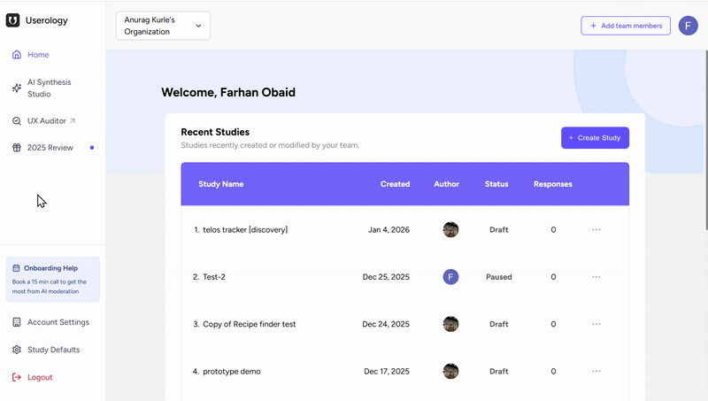
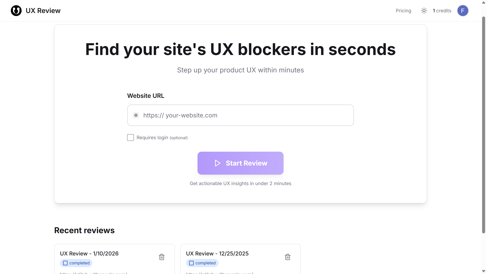
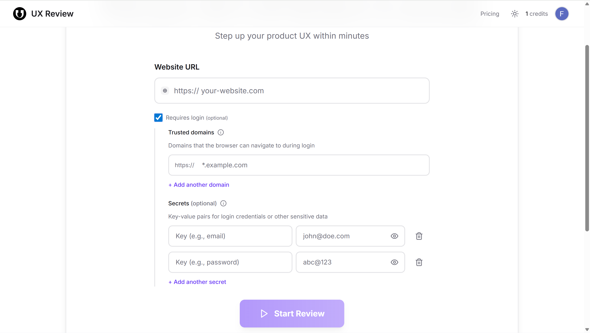
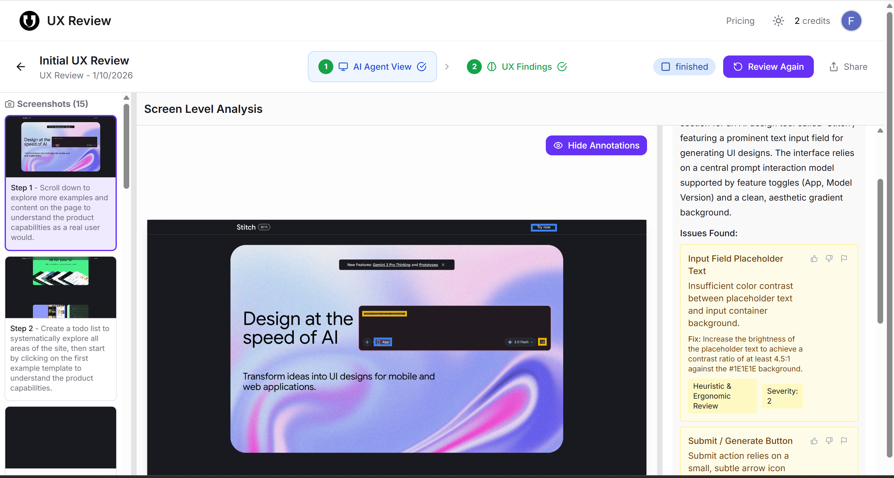
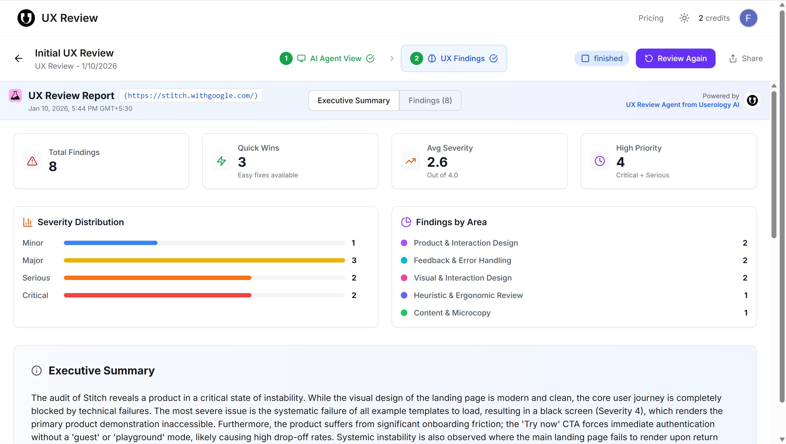
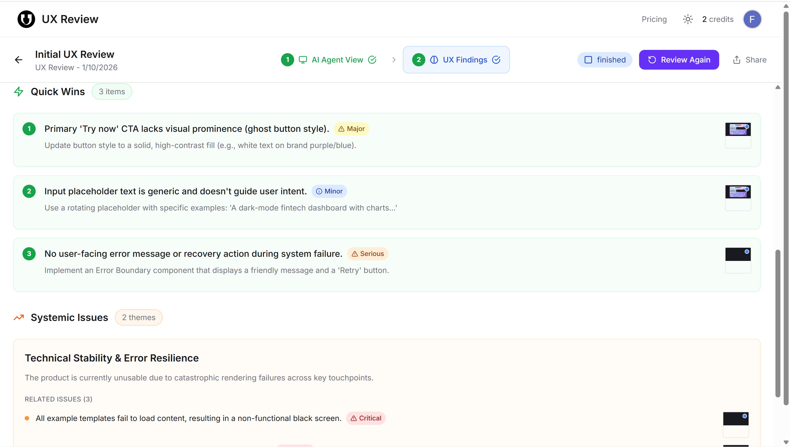
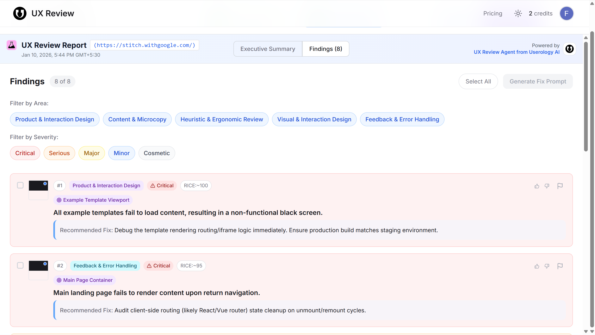
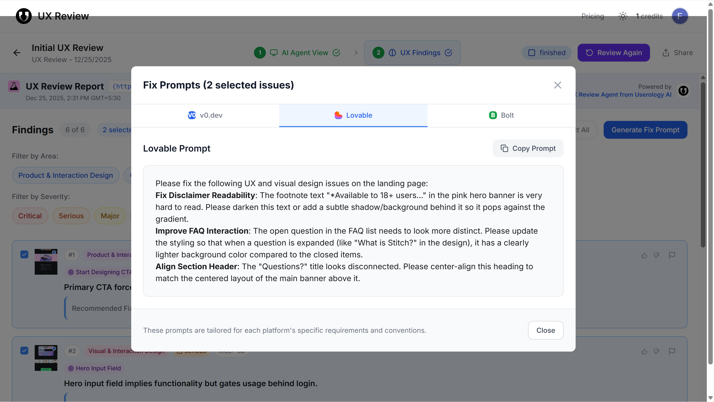
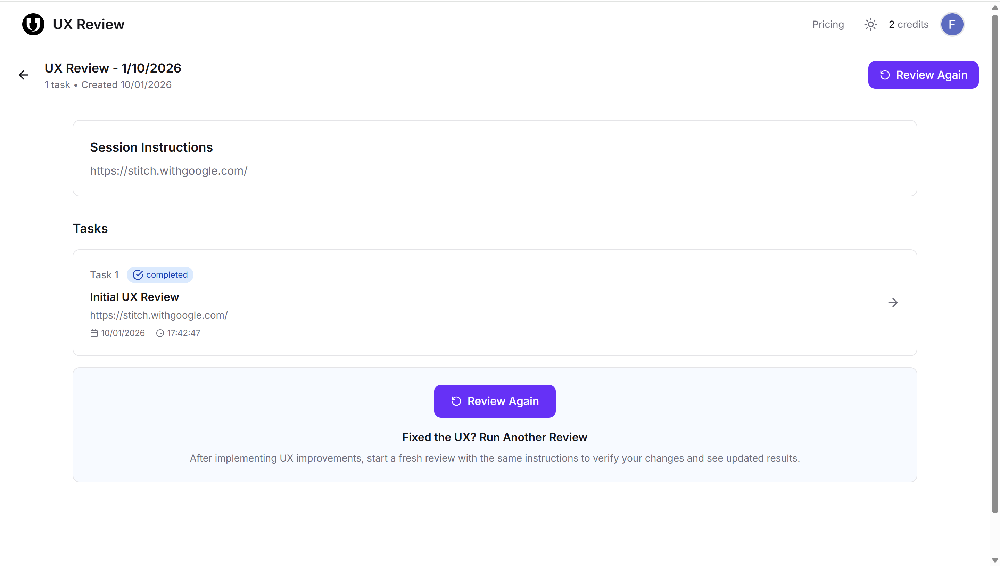

UX Auditor is a sub-product within Userology that helps you identify usability issues across websites and digital products. It uses a live browser session to simulate real user behavior, captures screenshots at each step, and consolidates observations into structured, prioritized UX findings.
Starting a UX Review
You can access UX Auditor from the left navigation pane on the Userology landing page. You are redirected to a new page from which you can start a new review by entering a website URL or view your recent reviews.


If the website requires authentication, enable Requires login to specify the domains the browser is allowed to access during login, and add the login credentials as key–value pairs. Once all required details are filled in, click Start Review to begin the audit.

How the Review Works
Once the review starts, UX Auditor launches a live browser session that automatically navigates through your website. During this session, it performs actions like scrolling, clicking, and moving between pages while capturing screenshots at each step. It observes how screens load, respond, and behave during various interactions. These screenshots serve as visual evidence to support the UX findings.
In the AI Agent View, each screen visited is displayed alongside observations and identified UX issues. Annotations can be shown or hidden while reviewing the analysis.

Understanding the UX Findings
Once the analysis is complete, all observations are consolidated into the UX Findings view. This view serves as the main dashboard for reviewing UX issues.
The Executive Summary tab provides a high-level overview: total findings, quick wins, average severity, and high-priority issue count. It also shows severity distribution and findings grouped by UX area (e.g., Product & Interaction Design, Feedback & Error Handling, Content & Microcopy).

Quick Wins highlight easy-to-fix issues with clear recommendations. Whereas Systemic Issues group together broader UX problems that affect multiple parts of the product.

In the Findings tab, each UX issue is listed as a separate item, making it easy to review problems one by one. Every finding includes the UX area it relates to, its severity level (Critical, Serious, Major, Minor, or Cosmetic), the specific screen or component where it occurs, a clear explanation of the issue, and a recommended fix.

To help you focus on what matters most, you can filter findings by UX area or severity level. You can also select individual findings using checkboxes or select all findings at once.
Generate Fix Prompt
The Generate Fix Prompt feature allows you to convert selected UX findings into clear, actionable instructions for resolving issues. To generate fix prompts, select one or more findings and click Generate Fix Prompt. The system analyzes the selected issues along with their associated screenshots to create detailed fix instructions.

Once generated, the fix prompts are shown in a tabbed interface with platform-specific versions tailored for v0.dev, Lovable, and Bolt. Each tab includes structured fix instructions, a clear description of the UX issues, and specific guidance on how to improve the affected elements. A Copy Prompt button is available in every tab, making it easy to copy and share the prompt or use it in external tools.
Review Again
After implementing UX improvements, you can review the experience again by clicking Review Again. This runs a fresh UX audit using the same setup, allowing you to validate whether previously identified issues have been resolved.

If you need further help, please email us at support@userology.co
Was this article helpful?
Thank you for your feedback!